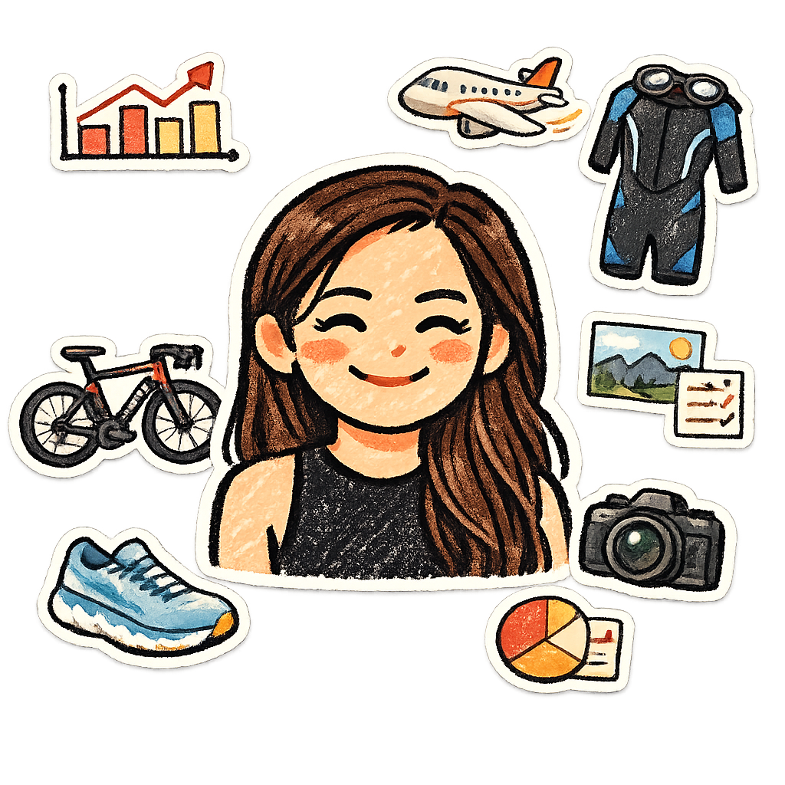

I’m a senior data analyst in healthcare, working toward becoming a data scientist. Outside of work, I’m usually training for something (swimming, cycling, and running), planning a trip, taking photos, or finding new ways to make life feel full and fun.
Documentation, tokens, library maintenance, governance, and translating design criteria into real implementation.
With cross-team proximity, coherent technical advocacy, and just enough organization to scale without losing quality.
Creating structure so the system keeps growing without becoming operational noise.
Providing context on usage, decisions, and maintenance — without turning the system into bureaucracy.
Organizing visual and technical foundations to scale implementation with consistency.
Connecting stakeholders, design, and development into the same conversation.